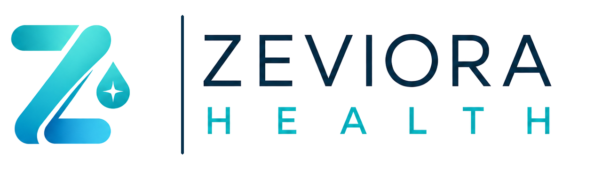

Zásady ochrany osobných údajov
ZEVIORA – Zdravie zrozumiteľne · verzia 2026-08-08-v1
1. Prevádzkovateľ
Zdravie zrozumiteľne, o.z.IČO: 57 557 284
registrácia: VVS/1-900/90-74082
Na Hrebienku 1490/7, 811 02 Bratislava-Staré Mesto
e-mail: info@zdraviezrozumitelne.sk
2. Aké údaje aplikácia spracúva
Údaje uložené iba vo vašom zariadení
- originálne obrázky zdravotných správ,
- OCR text, AI vysvetlenia a história správ,
- meno profilu, prehľad liekov, návštevy a poznámky, ktoré si zadáte,
- lokálny záznam o udelení súhlasu a verzii týchto zásad.
Tieto údaje používame prostredníctvom úložísk prehliadača Local Storage a IndexedDB. OZ ich nevie na diaľku prezerať ani vymazať.
Údaje odoslané na AI spracovanie
- text rozpoznaný z dokumentu pomocou OCR,
- zvolený typ dokumentu a medicínska špecializácia, ak ich používateľ uvedie,
- údaje nachádzajúce sa priamo v texte, ktoré môžu zahŕňať identifikačné a zdravotné údaje.
Originálny obrázok sa do backendu ani OpenAI API neposiela.
Technické a kontaktné údaje
Poskytovatelia hostingu môžu spracovať bežné technické údaje, napríklad IP adresu, čas požiadavky, typ prehliadača a stavový kód. Ak nám napíšete e-mail, spracujeme vašu adresu a obsah komunikácie. E-mail nepoužívajte na posielanie zdravotných správ.
3. Účely a právny základ
- AI vysvetlenie: váš výslovný súhlas podľa čl. 6 ods. 1 písm. a) a čl. 9 ods. 2 písm. a) GDPR.
- Lokálne funkcie aplikácie: vykonanie služby, ktorú ste si vyžiadali, a technické fungovanie aplikácie.
- Bezpečnosť a prevádzka: oprávnený záujem na ochrane služby, kontrole chýb a zabránení zneužitiu; obsah zdravotnej správy do našich aplikačných logov nezapisujeme.
- Komunikácia a spätná väzba: vybavenie vašej žiadosti a oprávnený záujem na zlepšovaní pilotnej služby.
4. Príjemcovia a poskytovatelia
- Netlify, Inc. – hosting používateľského rozhrania,
- Render Services, Inc. – prevádzka zabezpečeného backendu,
- OpenAI Ireland Ltd. – spracovanie rozpoznaného textu prostredníctvom OpenAI API,
- jsDelivr a cdnjs/Cloudflare – doručenie technických knižníc OCR a PDF; originálny dokument ani OCR text im aplikácia neposiela.
Pri prenosoch mimo Európskeho hospodárskeho priestoru sa uplatňujú mechanizmy a záruky uvedené v podmienkach a dodatkoch o spracúvaní údajov príslušných poskytovateľov, vrátane štandardných zmluvných doložiek alebo platných rámcov na prenos údajov.
5. Uchovávanie
- Vo vašom zariadení: až do vymazania jednotlivých správ, použitia funkcie „Vymazať všetky údaje“, vymazania dát prehliadača alebo odinštalovania aplikácie.
- Backend ZEVIORA: obsah správy sa neukladá do databázy ani do aplikačných logov; počas požiadavky sa spracuje prechodne.
- OpenAI API: podľa štandardných nastavení môže byť vstup a výstup súčasťou bezpečnostných logov najviac 30 dní, ak právne alebo bezpečnostné dôvody nevyžadujú dlhšie uchovanie. API obsah sa štandardne nepoužíva na trénovanie modelov.
- E-mailová komunikácia: po čas potrebný na vybavenie žiadosti a primeranú evidenciu komunikácie.
6. Dobrovoľnosť a odvolanie súhlasu
Správu nemusíte nahrať. Bez výslovného súhlasu aplikácia AI spracovanie nespustí. Súhlas môžete odvolať pre budúce spracovanie tým, že ďalšiu správu nenahráte a vymažete lokálne údaje. Už dokončenú požiadavku nemožno spätne odoslať „naspäť“, no môžete nás kontaktovať v súvislosti so svojimi právami.
7. Vaše práva
Za podmienok GDPR máte právo na prístup, opravu, vymazanie, obmedzenie spracúvania, prenosnosť, námietku a odvolanie súhlasu. Keďže aplikácia nemá používateľské účty a históriu uchováva iba vo vašom zariadení, OZ nemusí byť schopné údaje na zariadení identifikovať alebo vyhľadať.
Žiadosť môžete poslať na info@zdraviezrozumitelne.sk. Máte tiež právo podať návrh alebo sťažnosť na Úrad na ochranu osobných údajov SR, Námestie 1. mája 18, 811 06 Bratislava, statny.dozor@pdp.gov.sk.
8. Deti, profilovanie a automatizované rozhodovanie
Služba je určená iba osobám od 18 rokov. Výstup AI sa nepoužíva na rozhodovanie s právnymi alebo obdobne významnými účinkami. Aplikácia nevykonáva reklamné profilovanie a v tejto verzii nepoužíva analytické ani reklamné cookies.
9. Bezpečnosť a zmeny
Používame šifrovaný prenos HTTPS, obmedzenie domén, obmedzenie počtu požiadaviek a logovanie bez obsahu zdravotných správ. Žiadna internetová služba však nemôže zaručiť absolútnu bezpečnosť. Pri významnej zmene spracúvania aktualizujeme tieto zásady a verziu súhlasu.
Tieto zásady opisujú aktuálnu verejnú pilotnú verziu. Posledná aktualizácia: 8. augusta 2026.
← Späť do aplikácie